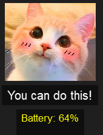

Welcome to the Pet Application! Follow these steps to set up and use the application on your Windows computer.
- Python 3.10 or higher. Download from here.
- Required Python packages:
- psutil
- PyQt5
Installation Steps
- Install Python 3.10 or higher if it is not already installed.
- Download the Pet Application files and extract them to a desired location.
- Open a terminal or command prompt and navigate to the directory where you extracted the files.
- Install the required Python packages by running the following commands:
pip install psutil PyQt5
Running the Pet Application
- Create a batch file to run the application:
Replace@echo off start /B pythonw "D:\path\to\your\Mypet.py"D:\path\to\your\Mypet.pywith the actual path to yourMypet.pyfile. - Double-click the batch file to start the pet application.
Setting Up the Application to Run on Startup
- Press
Win + Rto open the Run dialog. - Type
shell:startupand press Enter. This will open the Startup folder. - Copy the batch file you created and paste it into the Startup folder.
Troubleshooting
If you encounter any issues, ensure that:
- The paths in your batch file are correct.
- Python and the required packages are installed correctly.
If problems persist, consult the Python documentation or seek help from online forums and communities.